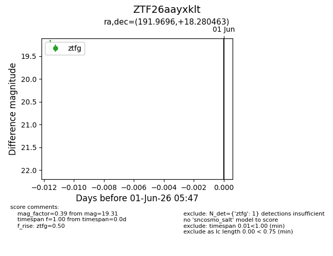
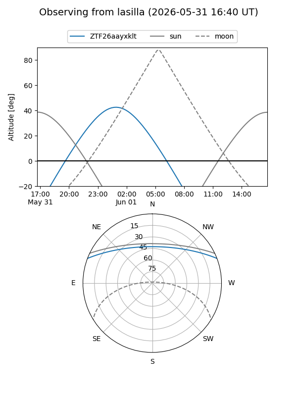
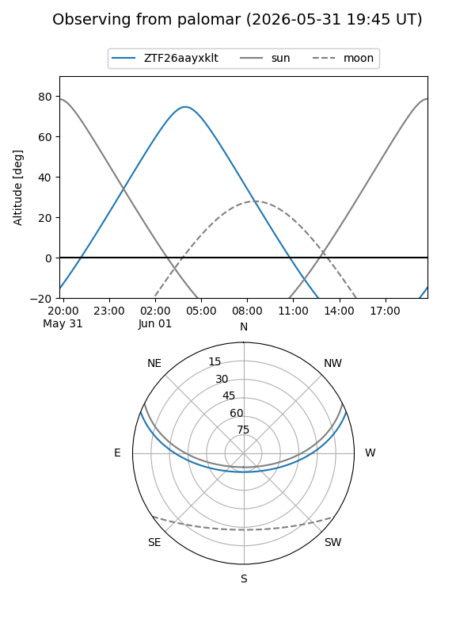

ZTF26aayxklt
Target ZTF26aayxklt at 2026-06-01 05:48
Aliases and brokers:
lsst-FINK: link
lsst-Lasair: link
lsst-ALeRCE: link
ztf-FINK: link
ztf-Lasair: link
ztf-ALeRCE: link
alt names
ZTF26aayxklt (ztf,fink_ztf)
Coordinates:
equatorial (ra, dec) = 191.9696,+18.28046
equatorial (HMS+DMS) = 12:47:52.70,+18:16:49.67
galactic (l, b) = (297.4534,+81.11432)
Flags:
Photometry:
last ztfg=19.31
1 ztfg detections
Lightcurve

Visibility


Additional plots